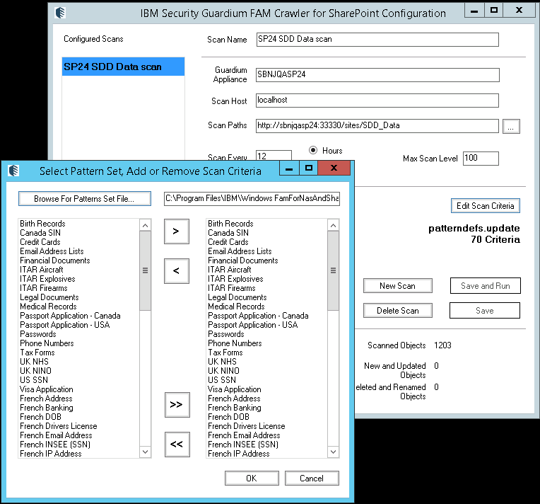

Summary: The process to configure a Guardium scan to use custom criteria varies greatly from the process followed within StealthAUDIT due to several limitations - scans are limited to patterns in a single file - a requirement for the patterndefs files to exist in multiple locations These limitations are true as of EOY 2018. Due to these constraints, the end user is required to - manually copy patterns from the mypatterndefs.update file to the patterndefs.update file - update the patterndefs.update file in multiple locations
Issue: System criteria definitions for StealthAUDIT are stored in %SAINSTALLDIR%DC\patterndefs.update. When an end user creates their own custom criteria, it gets written to a separate file %SAINSTALLDIR%DC\patterndefs.update. The Sensitive Data Addon is able to read from two separate files at once, which allows users to select both system criteria and custom criteria in a single scan. There is a limitation within Guardium in that the scan configuration only allows to read from a single (specified) patterndefs file

This means that in order to configure a single scan that includes criteria from different patterndefs files, end users have to manually copy over all desired patterns into a single file. In addition to that, any patterns file that exists in the SensitiveData directory must also exist in the root of the Bin directory.
One thing to keep in mind is that the Guardium upgrade process will overwrite the patterndefs.update file, which means that when going through this procedure, desired patterns should be copied to the mypatterndefs.update file instead of the patterndefs.update file to avoid losing custom criteria and pattern sets.
To configure a scan to use custom and system criteria, end users must do the following
- Launch the DLPCriteriaEditor.exe file directly through the IBM Install directory
- Copy desired system criteria from the patterndefs.update file to the mypatterndefs.update (making sure to leave a carriage return at the end of the file)
- Copy the mypatterndefs.update file from the Sensitive Data directory to the root of the Bin directory to ensure all pattern files are in sync between these two dirs
Instructions:
- Launch the DLPCriteriaEditor.exe file directly under the SensitiveData folder in the IBM Install directory (default install location: C:\Program Files\IBM\Windows FamForNasAndSharePoint\Bin\SensitiveData)
- Create custom criteria in the same manner as you would in StealthAUDIT. The basic options available are
- Creating a net new criteria with a custom set of keywords or a regular expression
- Copying a system criteria and modifying it
- Creating a summary criteria which combines any 2+ criteria with and/or combinations, as well as inclusions and exclusions
- The next step depends on your desired scan configuration.
- If the desired scan configuration only includes custom criteria, copy the mypatterndefs.update file from the SensitiveData directory (default install location: C:\Program Files\IBM\Windows FamForNasAndSharePoint\Bin\SensitiveData) to the root of the Bin directory (default install location: C:\Program Files\IBM\Windows FamForNasAndSharePoint\Bin)
- If the desired scan configuration includes both custom and system criteria, or criteria that exist across multiple patterndefs files, you will have to copy all of the desired patterns into the mypatterndefs.update file, making sure to leave a carriage return at the end of the file.
- Copy the mypatterndefs.update file from the SensitiveData directory to the Bin directory
- In the IBM Guardium UI, click 'Edit Scan Criteria'. When the Select Pattern Set window pops up, select 'Browse for Patterns set File' and choose the new mypatterndefs.update file. Save and Run the scan once all other parameters are configured as desired.
IBM Guardium - SharePoint
IBM Guardium - NAS
Product: StealthAUDIT
Module: Internal
Versions: IBM Guardium
Legacy Article ID: 2135